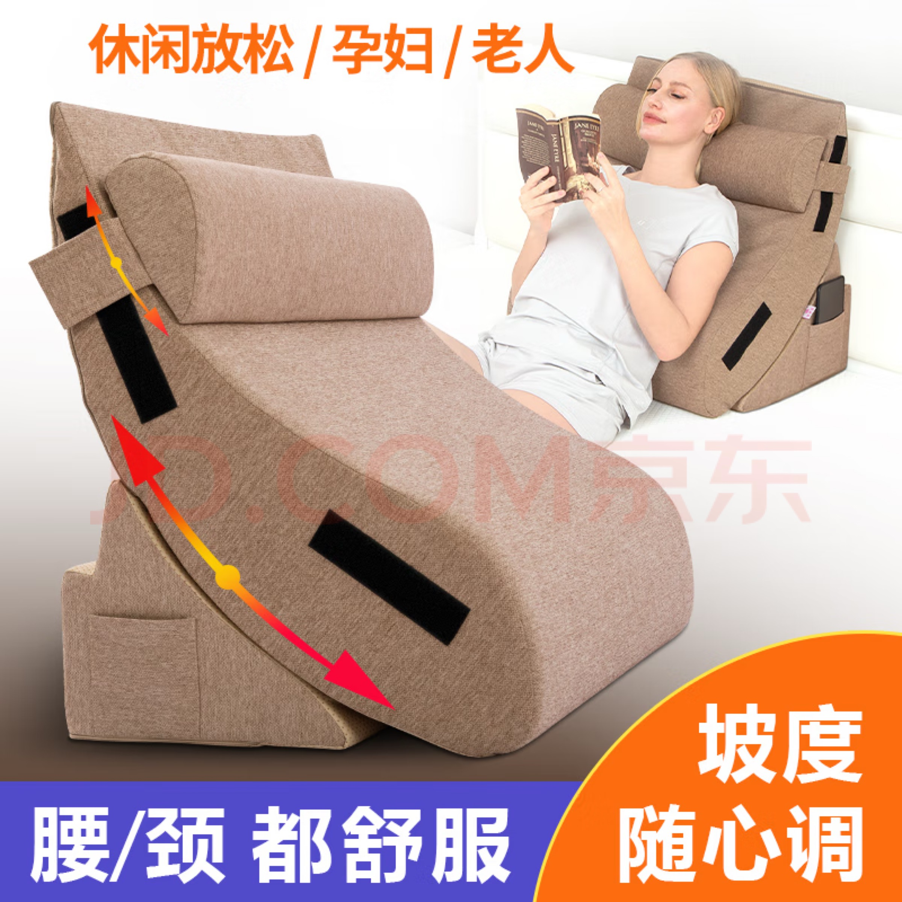
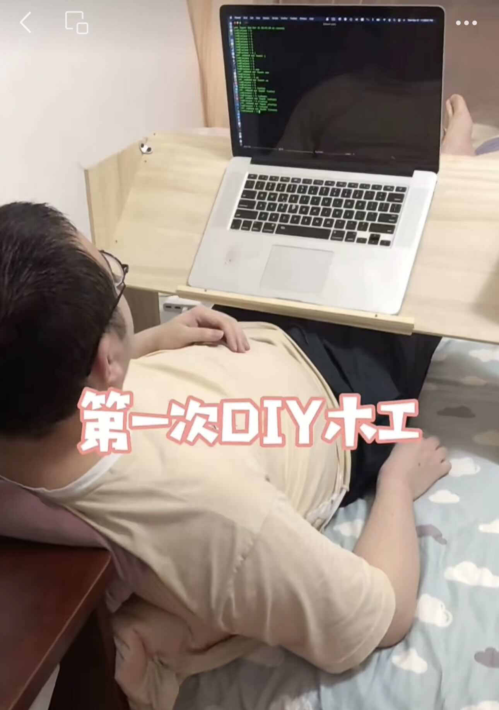

Verstellbares Kissen | Original, von KI übersetzt
Ich empfehle dieses verstellbare Kissen. Ich habe es im März 2023 gekauft. Es hat mich damals etwa 270 CNY gekostet. Heute (5. Januar 2025) wird es auf jd.com für etwa 240 CNY angeboten. Ich benutze es jetzt seit fast zwei Jahren. Das ist großartig, denn die Dinge, die man nach einem Jahr immer noch benutzt, sind die Dinge, die man wirklich braucht.
 Quelle: jd.com
Ich habe viele Dinge gekauft, die am Ende nur Staub angesammelt haben. Ich brauchte sie und habe sie in den ersten Tagen oder Monaten genutzt, aber danach habe ich sie nur noch selten verwendet. Ich habe andere Dinge zu erledigen, also nutze ich einige Produkte, um mich auf meine Prioritäten zu konzentrieren, und lasse andere Produkte beiseite. Es sind gute Produkte, aber ich habe weder die Zeit noch den tatsächlichen Bedarf, sie zu nutzen.
Zum Beispiel habe ich einen Kindle Scribe für fast 3000 CNY und eine Nintendo Switch für etwa 2000 CNY gekauft.
Allerdings hat dieses Liegekissen mir sehr geholfen, fast jeden Tag. Ich lehne mich daran, um mit meinem Laptop zu arbeiten. Oft benutze ich ein Nackenkissen, um den Laptop in einer guten Position für das Tippen zu halten.
Ein weiterer guter Aspekt dieses verstellbaren Kissens ist, dass es ein kleines Kopfkissen mitbringt, das gut geeignet ist, um den Kopf zu stützen.
Als ich in meiner Wohnung lebte, legte ich jeden Abend vor dem Schlafengehen das große Liegekissen in die Ecke meines Bettes. Mein Einzelbett ist wirklich groß.
Als ich jedoch in das Haus meiner Eltern zog, hatte ich nur eine kleine untere Liegefläche eines Etagenbetts. Wenn ich schlafe, lege ich das verstellbare Kissen auf die Stühle und nehme mein Schlafkissen heraus. Dann kann ich schlafen.
Ich habe mir sogar vor Jahren einen Laptoptisch fürs Bett gebaut. Das Problem daran war jedoch, dass er meine Bewegungsfreiheit einschränkte, da mein Körper unter dem Tisch hindurch musste. Wenn ich aufstand, musste ich den Tisch anheben und wegbewegen. Und da er aus Holz war, war er starr. Es fühlte sich nicht gut an, und ich musste ihn oft berühren. Der Polster, der aus Stoff besteht, ist weich und angenehm zu handhaben. Ein weiteres Problem war, dass der Laptoptisch fürs Bett viel Platz einnahm.
Platz ist wichtig. Ein Freund erzählte mir, dass einer der Gründe, warum er sein Frachtgeschäft aufgegeben hat, darin bestand, dass sein Transporter zwei Sitzreihen hatte, was den tatsächlichen Laderaum im Vergleich zu den Konkurrenten verengte, und er keinen neuen Transportertyp kaufen wollte.
Es gibt noch Bereiche, in denen diese Art von Liegekissen verbessert werden kann. Ein intelligentes Designmerkmal dieses Produkts ist die Aufteilung des großen Kissens in zwei Teile, die in verschiedenen Winkeln eingestellt werden können. Ein Vorschlag wäre, dass der Hersteller mehr Varianten in verschiedenen Größen anbieten könnte. Während das intelligente Design beibehalten wird, könnte der Hersteller eine Größe herstellen, die 2/3 der aktuellen Breite beträgt. Dies würde die Aufbewahrung und Organisation erleichtern, ohne dabei die Vorteile des Kissens wesentlich zu beeinträchtigen.
